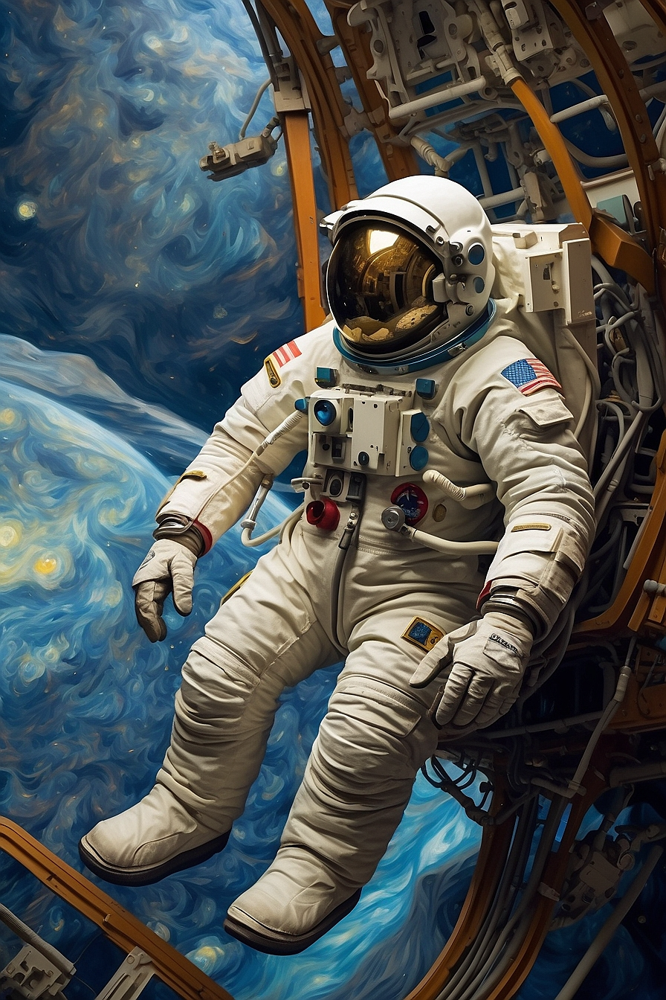
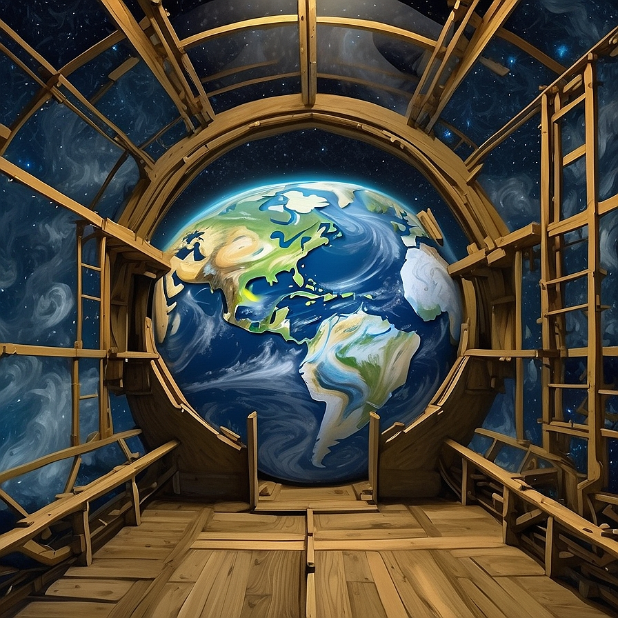

2024 Jan 31
See all posts
Floating Astronauts in Space: The Reality Behind the Equivalence Principle
I would like to address a topic that has been frequently
misunderstood by people lately. The phenomenon of astronauts
floating or dancing in space seems appealing at first glance,
but it is, in fact, a result of the equivalence principle
and the concept of free fall. In this article, I will
elaborate on why astronauts appear to float on the International
Space Station (ISS), how they are not actually in a gravity-free
environment, and delve into the concept of continuous falling
.

Van Gogh art style,astronaut floating on the iss Astronaut
blog post
Astronaut Movement on the ISS:
Gravity, one of the most striking discoveries in
the scientific world, signifies a fundamental change in physical
reality. The impression that astronauts float while navigating the
ISS may seem accurate initially, but it is an illusion. Astronauts
are not actually in a gravity-free environment. Since the ISS is only
about 400 kilometers above the Earth, gravity still has an impact,
around 90% of what we experience on the Earth's surface.

Van Gogh art style,view of the world from iss
blog post
Why Do They Appear to Float?:
Astronauts on the ISS are, in reality, in a state of
continuous free fall. In space, as objects fall,
they also move away from their surroundings. This condition
can be described as a form of infinite falling.
The ISS, moving at a sufficient speed, continually falls
towards the Earth while simultaneously distancing itself
from our planet. Understanding this requires a different
perspective than that of Earth.
Explanation with an Example:
Imagine making a throw with a ball on the Earth's surface.
Let's launch the ball parallel to the ground. What happens?
After a while, the ball follows a parabolic trajectory and
falls to the ground. However, this time, let's launch the ball
with an extremely high speed. It could potentially reach beyond
the Earth's orbit. We use a similar logic when launching rockets
into space.
Now, let's revisit the scenario where the ball falls to the ground.
An important detail often overlooked here is the
spherical nature of the Earth. In reality, the Earth is not flat.
As the ball continues its trajectory after being
launched, the curvature of the Earth causes the ground beneath it
to move away slightly. Now, let's launch the ball
with such a high speed that the distance the Earth moves away from
it, at the point where it would land, remains the
same. Theoretically, if the Earth were flat, the ball would fall
straight down. However, the Earth's surface is
continuously moving away from the ball by the same distance it is
falling. What happens in this situation? It enters
into orbit around the Earth. It undergoes a continuous free-fall motion
, yet never actually touches the ground.
Similar to... the ISS.
So, the International Space Station (ISS), which seems to be in
a gravity-free environment, is essentially
undergoing free-fall motion. This is the principle of equivalence at
work. Distinguishing between the two,
gravity-free and free-fall environments, is not that easy. That's why rigorous
testing continues.
Conclusion:
Instead of astronauts flying in space, we have astronauts
continuously falling. This phenomenon is explained
by the equivalence principle and the interaction of
free fall motion. Illustrating the topic with
real-world examples can aid in better grasping it.
2024 Jan 31 See all postsI would like to address a topic that has been frequently misunderstood by people lately. The phenomenon of astronauts floating or dancing in space seems appealing at first glance, but it is, in fact, a result of the equivalence principle and the concept of free fall. In this article, I will elaborate on why astronauts appear to float on the International Space Station (ISS), how they are not actually in a gravity-free environment, and delve into the concept of continuous falling .

Van Gogh art style,astronaut floating on the iss Astronaut blog post
Astronaut Movement on the ISS:
Gravity, one of the most striking discoveries in the scientific world, signifies a fundamental change in physical reality. The impression that astronauts float while navigating the ISS may seem accurate initially, but it is an illusion. Astronauts are not actually in a gravity-free environment. Since the ISS is only about 400 kilometers above the Earth, gravity still has an impact, around 90% of what we experience on the Earth's surface.

Van Gogh art style,view of the world from iss blog post
Why Do They Appear to Float?:
Astronauts on the ISS are, in reality, in a state of continuous free fall. In space, as objects fall, they also move away from their surroundings. This condition can be described as a form of infinite falling. The ISS, moving at a sufficient speed, continually falls towards the Earth while simultaneously distancing itself from our planet. Understanding this requires a different perspective than that of Earth.
Explanation with an Example:
Imagine making a throw with a ball on the Earth's surface. Let's launch the ball parallel to the ground. What happens? After a while, the ball follows a parabolic trajectory and falls to the ground. However, this time, let's launch the ball with an extremely high speed. It could potentially reach beyond the Earth's orbit. We use a similar logic when launching rockets into space.
Now, let's revisit the scenario where the ball falls to the ground. An important detail often overlooked here is the spherical nature of the Earth. In reality, the Earth is not flat. As the ball continues its trajectory after being launched, the curvature of the Earth causes the ground beneath it to move away slightly. Now, let's launch the ball with such a high speed that the distance the Earth moves away from it, at the point where it would land, remains the same. Theoretically, if the Earth were flat, the ball would fall straight down. However, the Earth's surface is continuously moving away from the ball by the same distance it is falling. What happens in this situation? It enters into orbit around the Earth. It undergoes a continuous free-fall motion , yet never actually touches the ground. Similar to... the ISS.
So, the International Space Station (ISS), which seems to be in a gravity-free environment, is essentially undergoing free-fall motion. This is the principle of equivalence at work. Distinguishing between the two, gravity-free and free-fall environments, is not that easy. That's why rigorous testing continues.
Conclusion:
Instead of astronauts flying in space, we have astronauts continuously falling. This phenomenon is explained by the equivalence principle and the interaction of free fall motion. Illustrating the topic with real-world examples can aid in better grasping it.